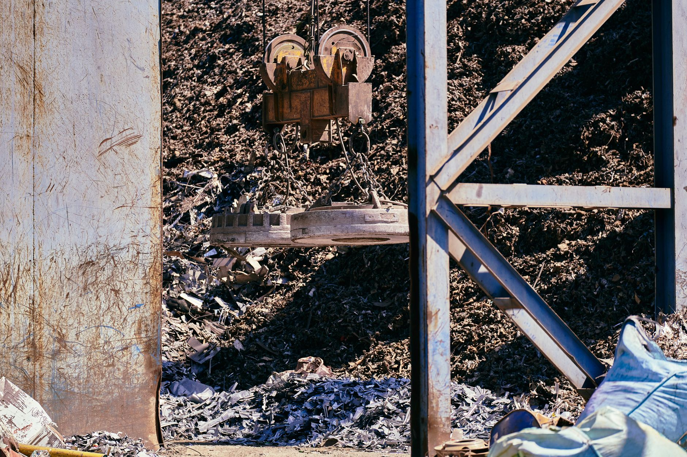

LS에코에너지, 희토류 탈중국 선제 구체화…IRA 수주 경쟁력 선점

LS에코에너지가 전선·전력기기 제조에 사용하는 희토류 자석 소재의 중국산 비중을 낮추는 공급망 재편을 추진 중이다. 연간 희토류 조달 규모는 약 500t으로 파악되며, 베트남·말레이시아 경유 루트 다변화가 구체화 단계에 접어들었다.
글로벌 희토류 영구자석 생산의 90% 이상이 중국에 집중돼 있으며, 중국은 2024년 9월 희토류 관련 기술 수출을 미국·유럽에 추가 제한했다. 네오디뮴·디스프로슘 등 핵심 희토류 가격은 2023년 대비 25~40% 상승한 상태다.
미국 인플레이션감축법(IRA)과 국방수권법(NDAA)은 2026년부터 중국산 소재 비중 규제를 강화해 FEOC(해외 우려 기업) 요건을 충족하지 못하는 업체는 연방 조달 시장에서 원천 배제된다. LS에코에너지의 선제 재편은 이 창을 통과하기 위한 포지셔닝이다.
LS에코에너지의 움직임은 단순한 원자재 조달 다변화가 아니라 중국 외 공급망을 먼저 선점해 글로벌 전력 인프라 수주에서 경쟁자를 배제하는 전략적 포지셔닝이다. 해저 케이블·전력망 수요는 AI 데이터센터 전력 인프라 확장과 직결돼 있어, 소재 조달 안정성이 수주 경쟁력에 직접 영향을 미친다.
베트남·말레이시아 경유 희토류 재편은 미국 FEOC 규정 우회 구조이기도 하다. 2026년 이후 IRA·NDAA 요건이 실질 적용되면 이미 공급망 전환을 완료한 기업과 그렇지 못한 기업 간 수주 격차가 수십억 달러 규모로 벌어질 수 있다.
LS에코에너지는 희토류 공급망 재편 완료 시 미국·유럽 전력 인프라 입찰에서 중국산 소재 배제 요건을 충족하는 몇 안 되는 아시아 전선 기업이 된다. 글로벌 해저 케이블 시장은 2030년까지 연간 200억 달러 규모로 성장이 예측돼 수주 기반이 급격히 확대된다.
호주·말레이시아 기반의 Lynas Corporation은 현재 중국 외 최대 희토류 정련 업체로 연산 약 15,000t 규모를 보유하고 있으며, LS에코에너지 같은 선제 재편 수요가 늘수록 가격 협상력과 장기 계약 수익이 높아진다.
중국산 희토류에 의존을 유지하는 경쟁 전선 업체들은 IRA·NDAA 요건 충족 실패로 미국 연방 조달 시장에서 탈락 리스크가 높아진다. 특히 2026년 이후 요건이 강화되면 준비 없이 대응하는 기업은 수주 기회 자체를 잃는다.
희토류 조달 다변화 여력이 없는 한국 중소 전기기기 제조업체들은 중국산 네오디뮴 가격 25~40% 상승에 따른 원가 부담을 그대로 흡수해야 하며, 대기업 대비 마진 압박이 더 심각한 구조다.
LS에코에너지 사례처럼 희토류 조달처를 베트남·말레이시아·호주로 다변화하는 기업은 미국 IRA·NDAA 요건을 조기 충족해 글로벌 전력 인프라 수주에서 경쟁력을 선점할 수 있다. 재편 완료 시점이 2026년 요건 강화 이전이냐 이후냐가 사업 기회의 규모를 결정한다.
Lynas(호주·말레이시아), MP Materials(미국) 등과의 장기 offtake 계약 체결을 2025년 내로 서두를 것을 권고한다. 2026년 NDAA 요건 강화 이후에는 계약 선점 경쟁이 더 치열해지며, 현재도 Lynas 가용 물량의 70% 이상이 이미 장기 계약으로 묶여 있다.
실제 조달 현장에서는 — 중국 외 희토류 정련 업체의 실제 공급 가능 물량이 글로벌 수요의 10~15%에 불과한 상황에서, LS에코에너지처럼 선제적으로 계약을 확보하지 않으면 2~3년 후에는 물량 배정 자체가 불가능한 '선착순 시장'이 형성되고 있다. 공급사 실사(due diligence)와 계약 협상을 지금 즉시 시작해야 한다.
이 포스팅은 쿠팡 파트너스 활동의 일환으로 수수료를 제공받습니다.